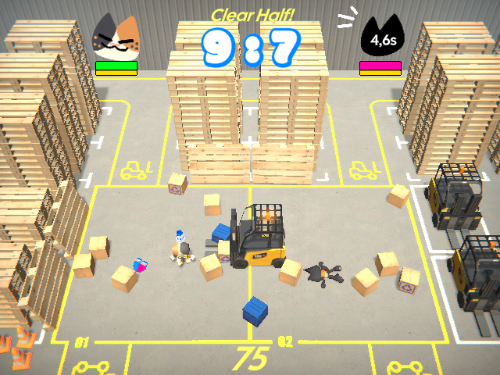
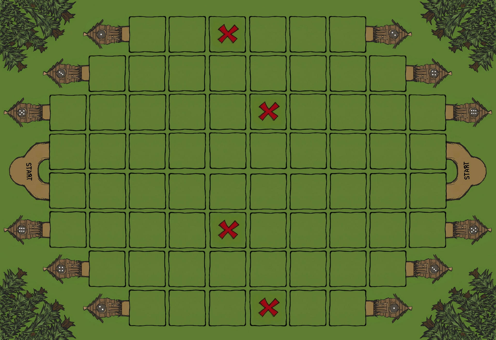
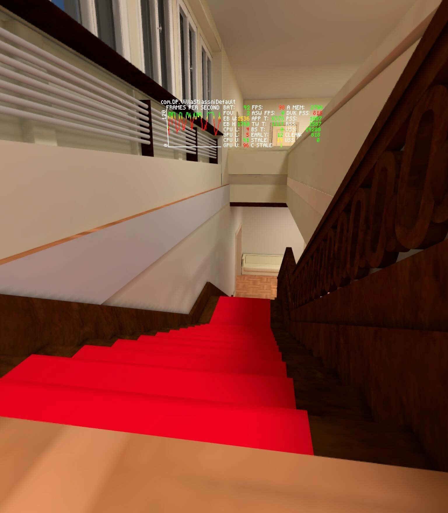
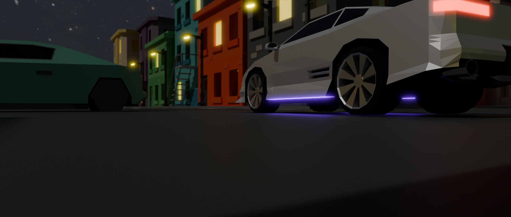

Hey, I’m Patrik Potančok
I’m an IT student with a specialization in Game Development at Masaryk University. Previously, I earned a bachelor's in Information Technology from VUT FIT, where I gained experience in programming, mathematics, electronics, and software systems. I decided for a Game Development major for my passion for games. Eager to further develop my technical skills, collaborate on creative projects, and gain industry experience. I'm from Slovakia but currently based in Brno, Czech Republic.
Core skills
Skills
- Unity
- Blender
- 3D modelling
- Character design
- Animation
- C#
- C++
- PHP
- HTML/CSS
- JavaScript
- TypeScript
- Git
- Laravel
- Teamwork
- Problem-solving
Interests
What I enjoy outside class and work
- Board games
- Computer games
- 3D modelling
- Cars
- Formula 1
- Travel
- Sim Racing
- VR
Education
Academic path
-
Sep 2024 - Present
Masaryk University, Brno
Master's in Visual Informatics with a Game Development specialization.
-
Sep 2021 - Jun 2024
Brno University of Technology, FIT
Bachelor of Information Technology, focused on programming, mathematics, electronics, and software systems.
-
Sep 2018 - Jun 2019
Matej Bel University in Banská Bystrica
Robotics course focused on assembling and programming a basic Otto robot.
Experience
Recent work
-
Sep 2025 - Jan 2026
Internship Game Developer, Inlogic Software
Built simple games in TypeScript.
-
Jun 2025
Volunteer, Game Access Conference
Supported event logistics and strengthened teamwork in a game industry setting.
-
Jun 2023 - Aug 2024
Service Technician, Servis Invo
Delivered and assembled medical rehabilitation equipment.
Selected work
Projects
Games, animation, tabletop design, and VR optimisation work made through study, collaboration, and personal practice.

Meow Mayhem
A 2-4 player party game about warehouse cats, boxes, powerups, changing rules, and explosions.

Lumberjack Escape
A 1v1 board game focused on path building, action cards, and sabotaging the opponent.

Villa Stiassni VR
A diploma thesis case study on performance optimisation for standalone Meta Quest VR applications.

Car Chase Animation
A low-poly city chase sequence created in Blender with stylized environments and motion.
Contact
I am based in Czech Republic and open to game development, technical art, VR, and interactive media opportunities.